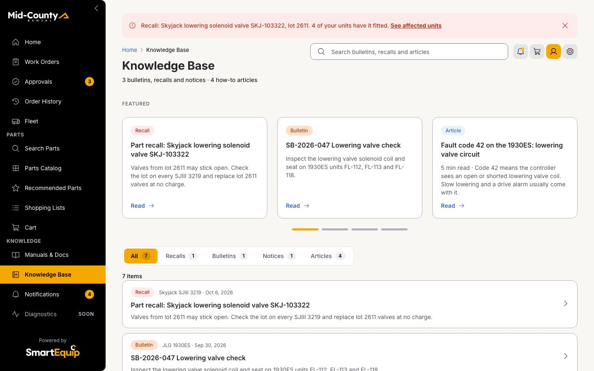
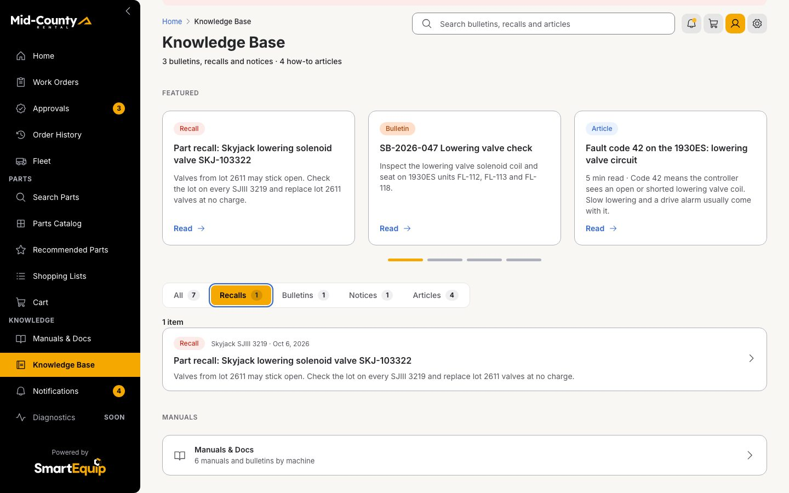
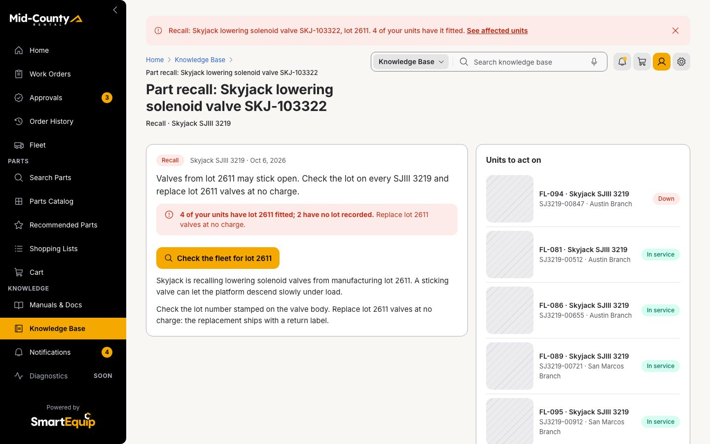
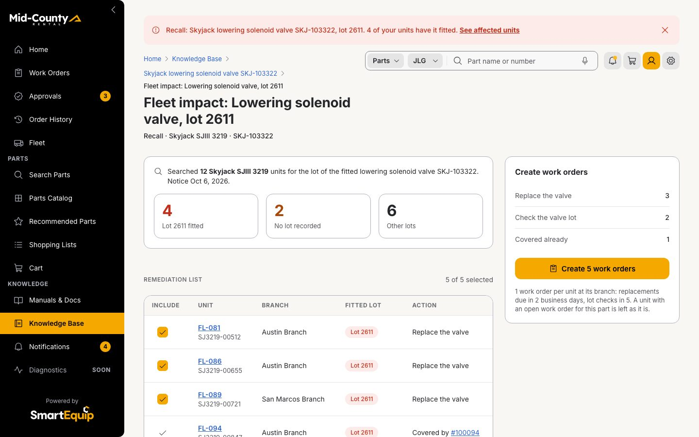
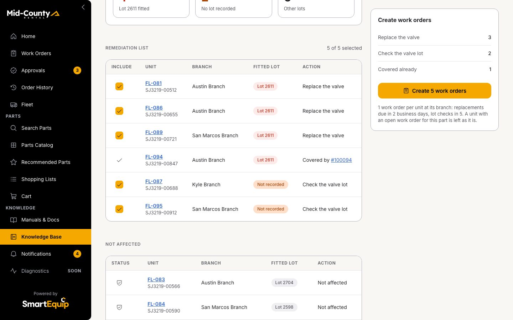
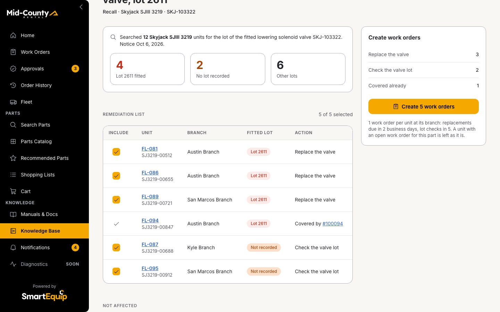
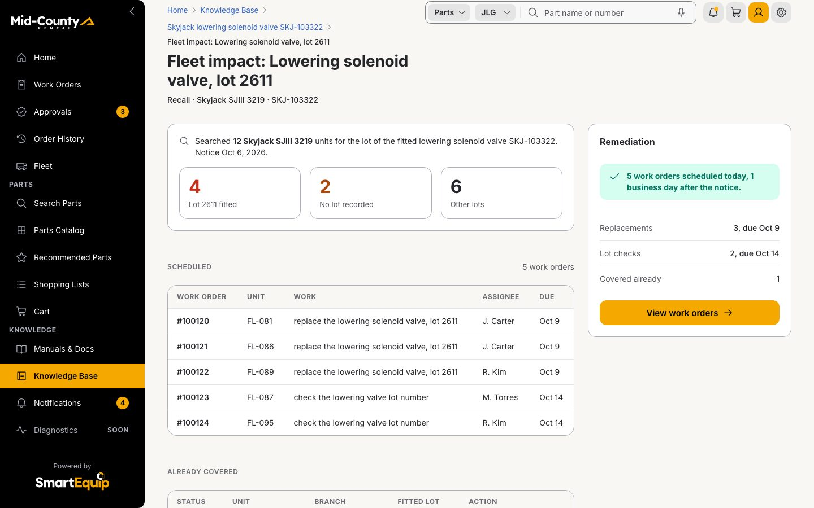
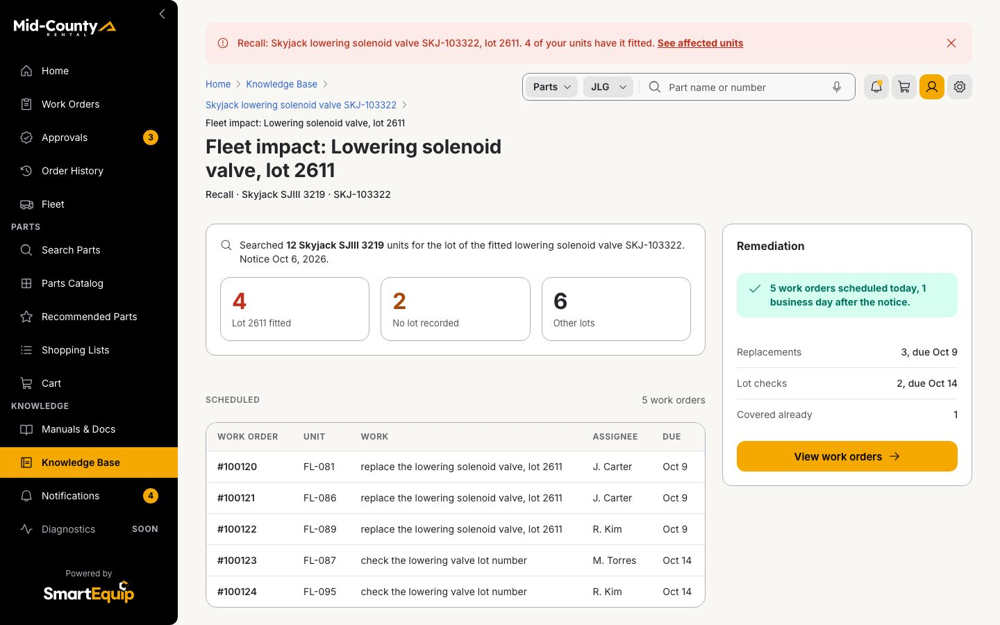
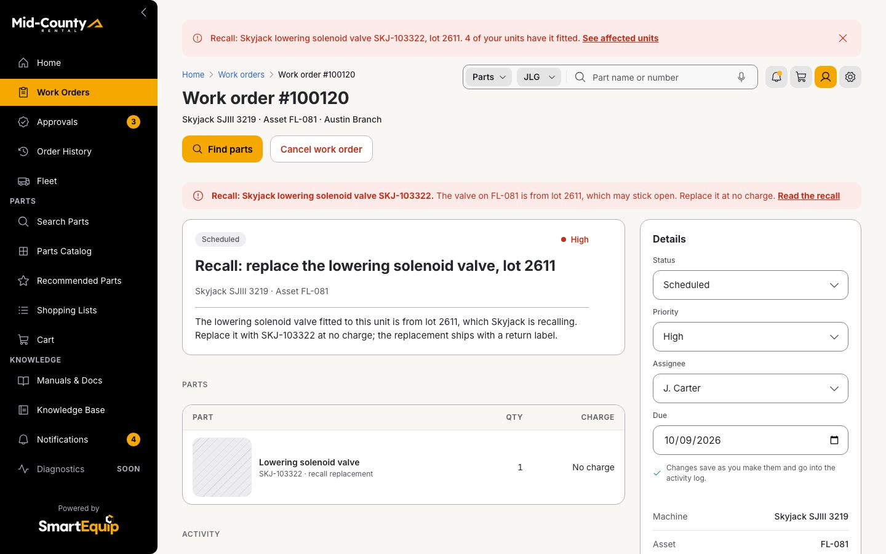

1 · Outcome
A recall names a lot; the fleet query finds every unit with that lot fitted, and 1 action schedules the work at each branch.
driver and patternbusiness objectoutcome
2 · Storyboard
Every step as the browser showed it once the step had settled, in 3 phases. Click a frame for full size.
Find the recall

Open the Knowledge Base from the rail
Click · Knowledge Base
Recalls
Click · Knowledge Base
Open the Skyjack lowering valve recall, lot 2611
Click · Article


Query the fleet

From 1 asset to the fleet: check every unit for lot 2611
Click · Recall impact12 SJIII 3219 units, grouped by the lot fitted
Look · Recall impact
FL-094 is already covered by work order #100094
Look · Recall impact
The remediation list: 3 replacements and 2 lot checks
Look · Recall impact


Act in bulk

Create 5 work orders in 1 action
Click · Recall impact
Scheduled 1 business day after the notice, each at its branch
Look · Recall impact
Open 1: the replacement valve is on it
Click · Work order


3 · Swimlane
Who does what, step by step: the supervisor's action, the screen it lands on, the rules the screen ran in the shared contracts and the records that changed.
supervisor stepscreen or rulerecord createdrecord changed
4 · Business objects
What the walkthrough reads, derives and writes, with the values of this run. Arrows read left to right.
readderived by a rulewrittenrisk
- Recall notice → 12 fleet units, SJIII3219: lot query
- 12 fleet units, SJIII3219 → Remediation list: need action
- Existing work orders → Remediation list: covered
- Remediation list → 5 work orders created: 1 action
- Remediation list → Recall action: record
5 · The rule
Every unit of the recalled model, grouped by the lot fitted, and the work order each one got.
| Unit | Branch | Fitted lot | Status | Already covered | Action | Work order | Due | Assigned |
|---|---|---|---|---|---|---|---|---|
| FL-081 | Austin Branch | 2611 | affected | replace the valve | #100120 | Oct 9 | J. Carter | |
| FL-086 | Austin Branch | 2611 | affected | replace the valve | #100121 | Oct 9 | J. Carter | |
| FL-089 | San Marcos Branch | 2611 | affected | replace the valve | #100122 | Oct 9 | R. Kim | |
| FL-094 | Austin Branch | 2611 | affected | #100094 | covered | |||
| FL-087 | Kyle Branch | not recorded | unknown | check the lot | #100123 | Oct 14 | M. Torres | |
| FL-095 | San Marcos Branch | not recorded | unknown | check the lot | #100124 | Oct 14 | R. Kim | |
| FL-083 | Austin Branch | 2704 | clear | none | ||||
| FL-084 | San Marcos Branch | 2598 | clear | none | ||||
| FL-088 | Austin Branch | 2704 | clear | none | ||||
| FL-090 | Austin Branch | 2598 | clear | none | ||||
| FL-092 | Austin Branch | 2704 | clear | none | ||||
| FL-093 | San Marcos Branch | 2704 | clear | none |
Scheduled 1 business day after the notice; replacements are due in 2 business days and lot checks in 5, each assigned at the unit's branch.
6 · State timeline
What the session held after each step: the records a reviewer can check in the prototype.
| Step | Action | Screen | Rules | Changed |
|---|---|---|---|---|
| 1 | Click: Open the Knowledge Base from the rail | Knowledge Base | ||
| 2 | Click: Recalls | Knowledge Base | ||
| 3 | Click: Open the Skyjack lowering valve recall, lot 2611 | Article | Fleet impact of the lot | |
| 4 | Click: From 1 asset to the fleet: check every unit for lot 2611 | Recall impact | Fleet impact of the lot | |
| 5 | Look: 12 SJIII 3219 units, grouped by the lot fitted | Recall impact | ||
| 6 | Look: FL-094 is already covered by work order #100094 | Recall impact | ||
| 7 | Look: The remediation list: 3 replacements and 2 lot checks | Recall impact | ||
| 8 | Click: Create 5 work orders in 1 action | Recall impact | Create the work orders; Fleet impact of the lot; Time from notice to action | 5 work orders: #100124 FL-095, #100123 FL-087, #100122 FL-089, #100121 FL-086, #100120 FL-081; Recall action recorded: nb-recall-103322: 5 work orders on 2026-10-07 |
| 9 | Look: Scheduled 1 business day after the notice, each at its branch | Recall impact | ||
| 10 | Click: Open 1: the replacement valve is on it | Work order |
Drawn from the walkthrough as it played in this folder on 2026-10-27: the frames are the screens it showed, the values are what the rules returned and what the session recorded. Regenerate with node _src/value-diagrams.mjs.